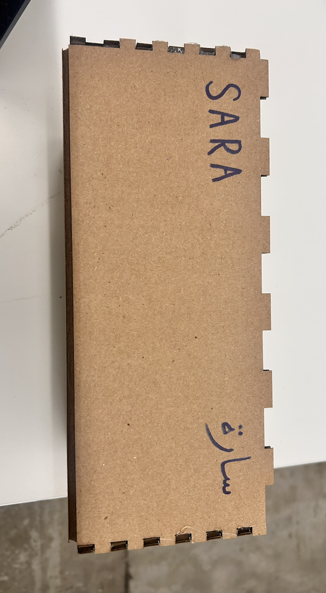

<div class="textcontainer">
<p class="margin"> </p>
<h3>Week 2: 2D Design & Cutting</h3>
<p class="margin"> </p>
<div class="flexrow">
<a id="btn" href="./temp.zip" download>Test Download Button
</a>
</div>
<p class="margin"> </p>
<h4>Assignment 1: Make a Box</h4>
<h4>This assignment taught me that you should master the basics first then proceed to harder things. I started off with solid and niche ideas that looked aesthetically pleasing, albeit geometrically impossible. There were numerous shapes that I wanted my box to take, however, I still did not quite know how to create mathematically correct finger joints that fit together. All thanks to Leo and my Tas for staying patient with me and teaching me how to make them. And so, I ended up creating a simple box with successful finger joints. There are nowhere near perfect, in fact, there is a tiny gap that I did not account for, and for some reason one finger got cut off, however, I am proud of my box and consider it progress. </h4>

<img src="./cbox.png" alt="generic placeholder image" style="width: 300px; height: 290px;">
<h4>Assignment 2: Fusion 360 Tutorial</h4>
<h4>These tutorials were pretty fun and easy to follow! Creating the lego block really helped me better understand how the extrude option in fusion works, and it was fascinating to start modelling 3d items in fusion! </h4>
<h4>Assignment 3: Fusion Modeling</h4>
<h4>My plan was to design an airpod case, as I love my airpods so much and cannot imagine life without them. I got the case right, but unfortunately fusion crashed afterwards and I lost a lot of the progress I made, but Im still satisfied with how it looked like!</h4>
<img src="./airpod.png" alt="generic placeholder image" style="width: 300px; height: 290px;">
<img src="./rawr.png" alt="generic placeholder image" style="width: 300px; height: 290px;">
</div>